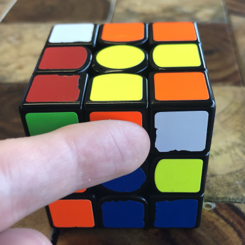
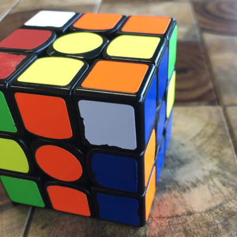
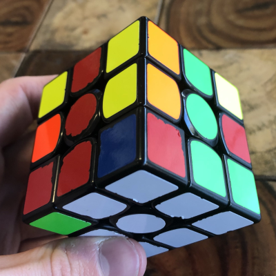
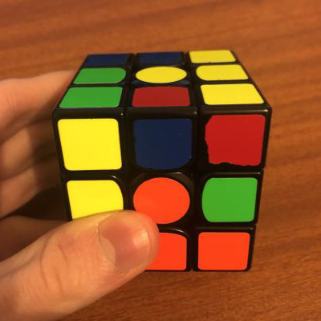

first 2 layers
the second step is to solve the entire first layer. we continue on the side we did the cross on, if you solved the white cross, you now are solving
the rest of the white pieces to solve the first layer.
first, look for any white corner piece in the top layer (any corner with white on it).

identify where that piece belongs. if its the Orange/White/Blue piece, it belongs in the corner that connect the Orange, White, and Blue layers.
next, position the cube so that the corner is on top of its correct position, and hold the cube with the white face down, and the corner you want to solve
on the right (as shown in picture).

perform the following algorithm.
R U R' U'.

repeat this algorithm as many times as needed until that piece is solved!

continue this process until there are no white corners in the up face... but you may not be done yet!
you may encounter a situation where you already have a white corner in the white layer, but it isnt in its correct position or orientation, as shown here.

to fix this, simply perfrom that same algorithm (R U R' U') once, to move that piece to the up layer, then solve it like you learned earlier.
if you have completed this step correctly, you will have solved the first layer!
step 3
the third step is to solve the entire second layer.
first, look for any edge pieces that do not have YELLOW on them (if you chose to start on a different colour, you look for any edges
that do not have the UP face colour on it... remember, hold the face you solved the cross on at the bottom.).

then, move that piece so that the sticker on the front of the piece (not the one on the yellow face) matches up with the centre for that colour.

this is a bit complicated, so please refer to the images and gifs provdided here to simplify this as much as possible.
identify where that piece has to go.
if it has to go to the right, you move the piece to the left, then, perform the following algorithm:
R U R' U', rotate the whole cube so that the corner is on the left now. then L' U' L U.

together, thats R U R' U' rotate L' U' L U.
the L algorithm here is identical to the first one you learned, except you are using your left hand now, instead of your right.
if the edge instead has to go the left, you move the piece to the right, then, perform the following algorithm:
L' U' L U, rotate the whole cube so that the corner is on the right now. then R U R' U'.

this is the same algorithm as before, just in the other order. L' U' L U rotate R U R' U'.
repeat this step until there are no non-yellow pieces in the top layer... but again, you might not be done yet!
you may have a situation where you have an edge in the right spot, just around the wrong way... or, in the right layer, but in the wrong position.

to fix this, move any other edge in the top layer into that piece, the same you would normally, in order to move the edge to the top.

then, you can solve that edge as learned.
if done correctly, you will have solved the 2nd layer!!